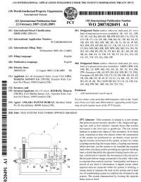
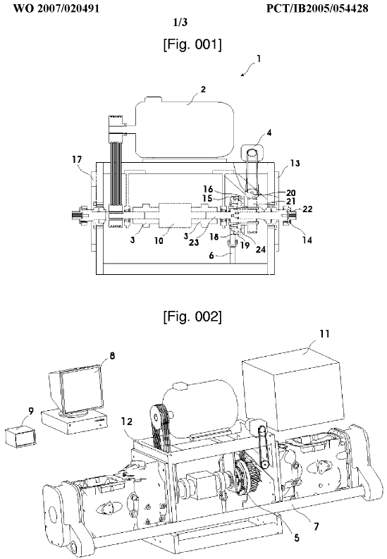

|
2.7 Test üniteleri ile ilgili yapýlan uluslararasý patent baþvurularý
Resim 5 ile gösterilen aktarma organlarý ve ayna mahruti testi ünitesi ile ilgili yapýlan patent baþvurularý aþaðýda verilmektedir. Bunlar sýrasý ile Türkiye, Avrupa ve Uluslararasý patent baþvurularýdýr. Ön incelemeleri tamamlanmýþ olup, baþvurular kabul edilmiþ, araþtýrma raporlarý beklenmektedir. Avrupa patent enstitüsü internet sitesinde patentleri yayýnlamýþ olup ülke giriþleri yapýlmýþ ve patent için son aþamaya geçilmiþtir;
- TR200503245
- EP1913358 (Test system that forms opposite braking)
- WO2007020491

3. Örnek olay çalýþmasý
2006 senesinde, o sene yeni çýkardýðýmýz bir model traktörümüzde, fren tutmama ve frenlerde performans yetersizliði problemi yaþadýk.
Test birimi olarak problemi yerinde görmek ve incelemek amacýyla Türkiye'nin deðiþik bölgelerine seyahatler yaptýk. Bu seyahatlerin sonucunda bazý müþterilerin traktörlerin arkasýna baðlanan römorklarý kapasitelerinden fazla yüklediklerini ve traktörlerinin frenlerinden memnun olmadýklarýný gördük. Fabrikaya geri döndüðümüzde fren sistemini tekrar gözden geçirdik ve frenlerin yeterli olduðunu fakat tüm müþterilerin de memnun edilmesi gerekliliðinde fikir birliðine vardýk.
Çok hýzlý davranýþ sergileyerek frenlerde geliþtirme yaptýk. Bu esnada üretim devam ediyor ve piyasada sorunlu traktör ve memnun olmayan müþteri sayýsý hýzla artýyordu. Yönetim geliþtirilen fren sisteminin hemen seriye girilmesini istiyordu. Ortada kalýp ve iþleme aparatlarý yapýmý için gerekli olan üç aylýk bir süreye minimum ihtiyaç vardý. Ne müþterinin ne de yönetimin beklemeye tahammülü yoktu. Bir çözüm üretilmesi gerekiyordu. Ürettik; Hýzlý prototipleme tezgahýnda her dört saatte bir kalýp ihtiyacý olan parçadan birer adet üretebiliyorduk (daha fazla bilgi için: otoinþa teknolojileri / direkt imalat uygulamalarý). Ürettiðimiz numuneleri model olarak kullandýk ve altý aylýk üretim miktarýný bu modellerden döktürdük. Ýþleme için de aparatlarý beklemeden CNC tezgahlarda günlük üretim miktarlarýný iþledik. Ýnanýlmaz bir þeydi; Yalnýzca on günde seri imalata girdik.
4. Sonuç
Anlatýlanlarýn ve verilen örneklerin ýþýðýnda, yeni ürünlerin ve markalarýn yaratýlmadýðý ve global pazarlarda pazarlanmadýðý bir ülkede ne Ar-Ge ne de Üniversite Sanayi iþbirliði geliþemeyecektir.
Üniversite sanayi iþbirliðinin bugüne kadar geliþmemesinin sebebi çok net olarak Ar-Ge yapýlmamasýdýr. Bugün Ar-Ge üssü olacaðýz diyoruz, temel sorun þimdi de þu ki global markalara mühendislik yaparak Ar-Ge yapabilir miyiz? Global markalar kendilerine ne kadar Ar-Ge yapmamýza izin verirler? Bu sorularýn cevaplarýný veremezsek, üniversite sanayi iþbirliði nasýl geliþir sorularý fazla bir anlam ifade etmeyecektir.
Üniversitenin Ar-Ge üssü olma hedefinde yeri ve konumu belirlenmeli, ölçütler koyulmalýdýr. Kurulacak bir konsorsiyum ile periyodik olarak örneðin her altý ayda bir gözden geçirmeler yapýlmalý ve gerekiyorsa yaptýrýmlar uygulanmalýdýr. Yüksek lisans ve üzeri tüm ya da belli bir orandaki tezler üniversite sanayi iþbirliði ile yapýlmalý ve bu çalýþmalardan uluslar arasý patentler, yayýnlar çýkmalýdýr.
Destek ve teþvikler önceliklendirilmeli ve kendi markasýný geliþtirip üreten ve global pazarlarda satanlara verilmelidir. Burada büyüklük küçüklük firma bazýnda aranmamalýdýr. Önemli önemsiz sektör deðil, giriþimcilik ve icatçýlýk aranmalýdýr.
Ýster Ar-Ge üssü olalým, ister üretim üssü, ister montaj fabrikalarý olalým, ne olursak olalým, global markalara ucuz iþçilik ve mühendislik ya da taþeronluk yaparak gelebileceðimiz yer bugün bulunduðumuz noktadýr.
Bulunduðumuz noktadan daha farklý bir yere gitmek istiyorsak yönümüzü deðiþtirmeliyiz.
Kaynaklar
Teþekkür
Sayýn Prof. Dr. Necati Tahralý hocama, olumlu rehberliði için teþekkürlerimi sunarým.
Özgeçmiþ (Eylül 2008)
Timuçin Bayram, 1967 yýlýnda Ýstanbul da doðdu. Lisans eðitimini Marmara Üniversitesi Teknik Eðitim Fakültesi Makine Bölümü'nde tamamladý.
Özel sektörde 17 yýllýk deneyime sahip olan yazar, sýrasý ile Kale kalýp gaz sayaçlarý test bölüm þefliði, Pressan A.Þ. üretim müdür yardýmcýlýðý ve Uzel de test ve prototip bölümleri kurucusu oldu ve 14 sene bu bölümlerin yöneticiliðini yaptý. Halen Bias Mühendislik'te Test ve Prototip Müdürü olarak çalýþmaktadýr.
Türkiye'nin ilk yerli þanzýman ve transaxle test ünitelerini kuran ve uluslararasý patenleri olan yazar, test sistemleri ve prototip konusunda sektörün önde gelen kiþilerindendir. Ýlk uygulamalý komple araç hýzlandýrýlmýþ test projesini Türkiye'de yapan ve uygulayan kiþidir. Bu çalýþma, 2008 OTEKON Kongresi'ne bildiri olarak da sunulmuþtur.
LimitSÝZ olarak bir de "blog"u olan yazar (timucinbayram.blogcu.com) iþ deneyimlerini kiþisel birikimleri ile harmanlayarak 34 adet makaleyi bloðunda yayýnlamaktadýr. Ayrýca yedi adet TEYDEP projesinde görev almýþtýr.
Neden Ar-Ge yapmalýyýz? Adý altýnda seminerler vermekte olup üniversite sanayi iþbirliði merkezleri platformunda 2008 yýlýnda ayný adlý semineri bildiri olarak da sunmuþtur. Ýlgi alanlarý, test mühendisliðinin Türkiye de geliþimini saðlamak, Ar-Ge konusunda seminerler vermek, yeni araç projeleri konusunda yerli sanayiye öncülük etmek olarak özetlenebilir.
Ýlgili Anket |
|
|
Anket baþlangýç
tarihi:
19-07-2003 |
|